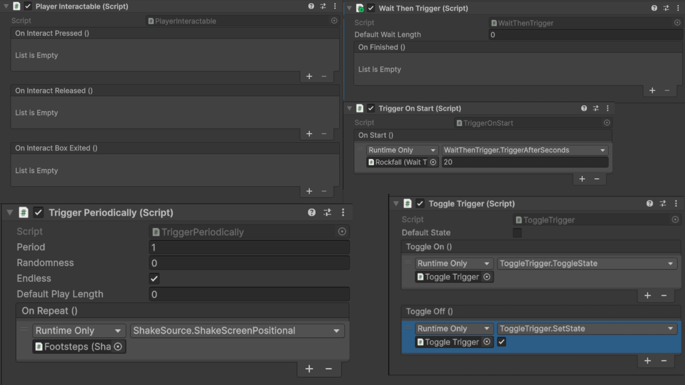
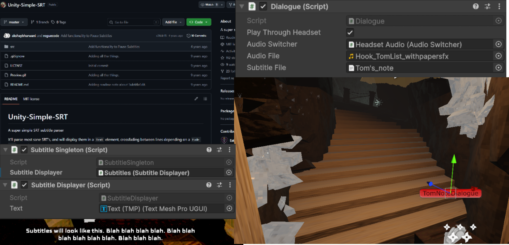

-
As the sole programmer on Saline Descent, I had the opportunity to create a variety of interesting features & mechanics. Here are some fun examples:
To cement the low-poly visual style of our game and reduce asset production bottlenecks, I was tasked with creating a system to mimic the directional sprites of Doom and games
like it. With this in mind, I created a directional sprites system which could support any number of directions we were able to produce sprites for. Here I've implemented a
standard, 8-directional setup, with sprites to match our monster's capsular hitbox.
Additionally, to emphasize the fragility of the environment to players, I created a system that would allow us to cause any object to crumble on command I created particles
reminiscent of salt crystals, which would spawn more or less based on the volume of the model, switching it with another model if desired. I had a lot of fun testing this,
strapping a crumbler to the player and running around the environment and destroying random objects in the environment.
-
As Saline Descent's programmer, I decided to build some tools to facilitate level design. I chose to create a modular set of components which utilised Unity's
Events System. Examples include:
- A timer which invokes after a time limit, that can be set per-component or per-call
- A one-time environmental trigger box
- A toggle trigger which alternates between two sets of events each time it is invoked, or can be set directly to invoke a particular state
- An environmental trigger which invokes when interacted with
- A trigger which invokes on Start()
- A trigger which goes off periodically, with adjustable randomness
Because of their reliance on Events, designers could chain these components, lego-style in-editor, to create in-game logic, puzzles and action sequences in a logical,
hands-on way.
-
Using roguecode's Unity-Simple-SRT package (and jury-rigging it a little to suit our purposes), I set up the subtitle systems for our game, ensuring a smooth workflow for our
writer and voice-actors.
Due to their ubiquity, I suggested we use the SRT format for our subtitles, as it would allow our writer to take advantage of the many free SRT editors online. I created a
Dialogue component which would trigger subtitle and/or audio files simultaneously, using a singleton to ensure subtitles could be triggered from anywhere in the scene, with
a single output text component.